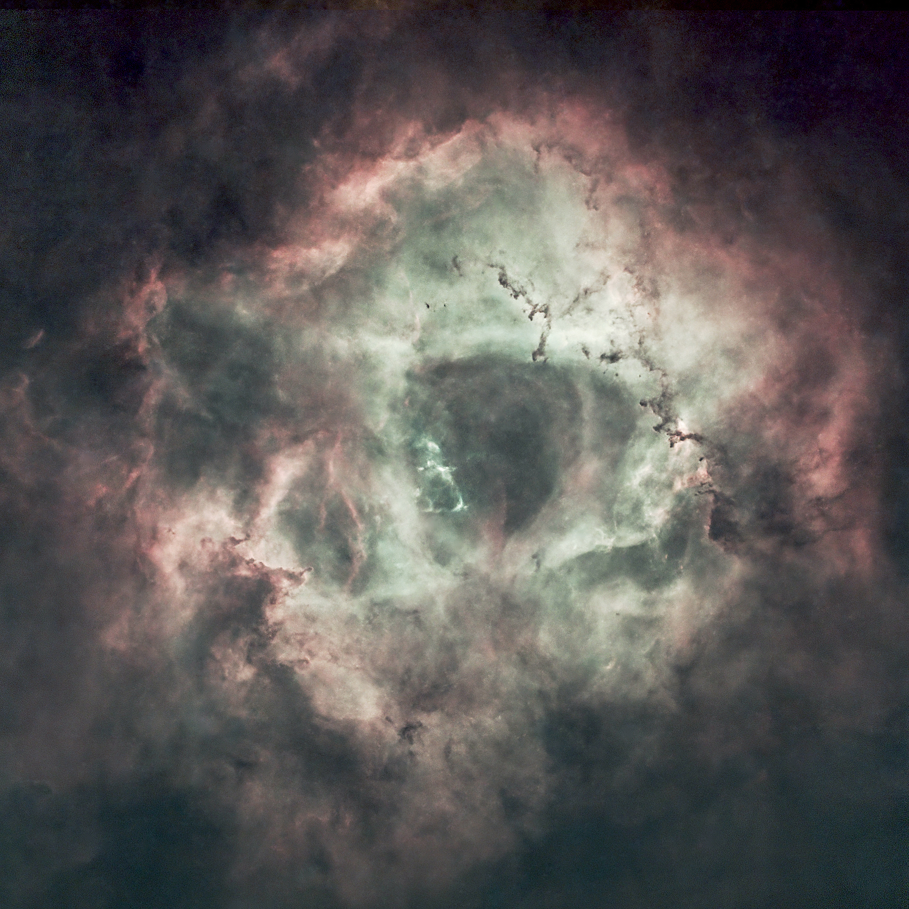
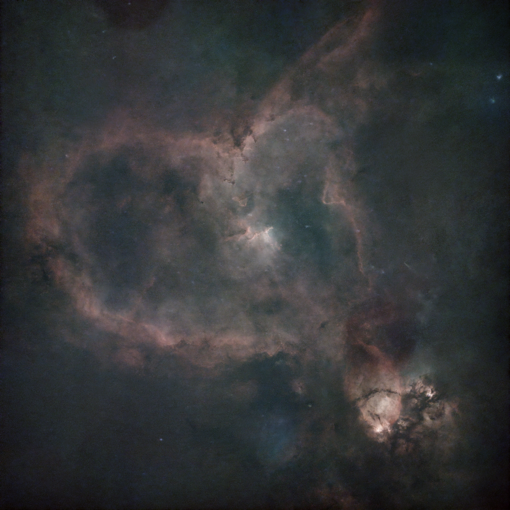

This image is of the Eagle Nebula, an area made famous by the iconic photograph of the Pillars of Creationfrom the Hubble Space Telescope. I took this photo when a comet named R2 Swan was passing near and in front of the nebula

This is a starless image of the Rosette Nebula, a vast star forming region of gas and dust near the Orion Nebula

The Heart Nebula is a beautiful emission nebula located in the constellation Cassiopeia, this is a test image I made while testing settings

The Rho Ophiuchi cloud complex is a dark nebula of gas and dust that is located in the constellation Ophiuchus. It is one of the closest star-forming regions to Earth, and it is home to many young stars and protostars. The nebula is also known for its distinctive blue color, which is caused by the scattering of light from nearby stars by the dust in the nebula.